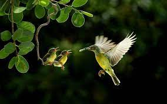

The world is full of beautiful places that most of us don’t even know about. From breath-taking waterfalls and jaw-dropping natural wonders to mysterious lost cities and quaint landmarks, you’re never short on things to see or do.
Shortlisting the 10 most beautiful places in the world is certainly not easy, and visiting all those beautiful places that this planet has to offer could take a lifetime, possibly more. However, we’ve shortlisted a few attractions that should always be close to the top of your bucket list, for each destination is an experience to be savored, a moment you’re sure to cherish throughout your life.
Cappadocia is a living example of just how odd yet beautiful nature can be. It presents a fantasy-like landscape that looks like it’s been plucked out of a fairy tale, alien-like hills and boulders that seem as if they’ve been transported from another planet. The humans who once lived here used the area’s soft stone to create underground shelters, leaving all kinds of weird architectural wonders in their wake. The lunar landscape is stunning on its own, but the countless hot-air balloons that fill up the sky with shades of red, yellow, orange and cream simply take its beauty to the next level. The Goreme Open Air Museum and its rock-cut churches and the subterranean wonders of Kaymakli are among the best things to see in Cappadocia.
It’s easy to see why the Whitehaven Beach ranks among the most photographed beaches in the world. The magnificent 7 km stretch of white sand that feels like your own private slice of heaven presents an aura of peace and serenity, letting you experience relaxation at its very best. The beach is accessible via boat from Hamilton Island and the ports of Shute Harbour and Airlie Beach. To enjoy the best view of Whitehaven Beach, make your way to Tongue Point. Time your trip with a low tide and you’ll get to see a mesmerizing fusion of colors that always promises the grandest of views